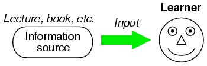
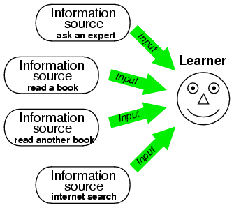
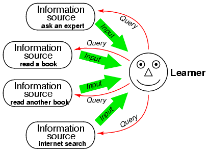
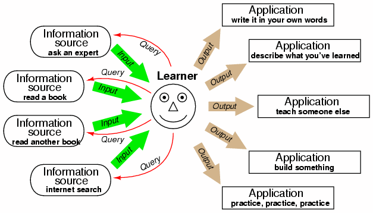
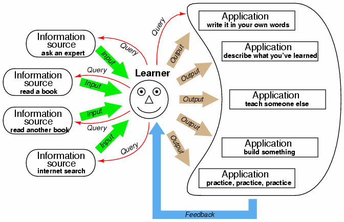

First, consult multiple information sources when trying to learn a new subject, concept, or skill. Then, creatively express, apply, or teach what you have just learned from these sources. Assess the results of your application, and use this information to guide your next round of inquiry. Above all, realize this simple truth: There are no shortcuts to learning. Learning requires persistence, dedication, effort, and occasionally frustration!
Most students I've met hold a rather simplistic view of learning. They believe that learning is a process of transferring information into their minds from an outside source, as though their minds were empty vessels waiting to be filled by teachers. While it is possible to learn some types of information in this manner, this model does not apply well to disciplines involving high-level thinking, including most subjects at the college level:
Learning is much more than accumulating information in your brain. Learning is a process of integrating new knowledge in a way that shapes and empowers your thinking. In order for this to occur, you must take the new knowledge and "make it your own." That is, you must translate the new information into terms you can relate to and use.
"Constructivist" learning theorists have been saying as much for decades, that people construct their own understanding of the world around them rather than receive understanding in ready-made form from others. The question is, how does one successfully apply this philosophy of learning to themselves?
The key to constructing your own understanding of anything is active engagement with the subject. It is not enough to be a passive recipient of information -- you must engage yourself fully in the learning process. This is easy enough to say, but harder to actually do, so I will describe specific techniques for you to follow that will make you an active learner.
First, never ever limit yourself to a single source of information when you are trying to learn something. Use multiple sources, as suggested in this illustration:
If this first piece of advice (to consult multiple sources) comes to you as a disappointment, you are not alone. Of course, it is easier just to get your information from one source, but ease is not the point here. The point is learning, and like most things worthwhile, learning requires effort. There are no shortcuts here! Every time you seek to find a shortcut in learning, what you are actually doing is cheating yourself out of a valuable experience.
Secondly, your use of information sources must be active to be fully effective. What I mean by this is engagement rather than passivity. Approach each of your sources with specific questions in mind, with the goal of finding answers to those questions:
Thirdly, apply what you glean from your sources. Don't just let that information lie idle in your brain -- put it into immediate action. This is where you begin to construct your own understanding:
Lastly, treat the results of your application as another source of information, querying and learning from these efforts as though they were primary sources (like experts or books). This last step establishes a feedback loop, enabling the learner to self-correct errors in understanding:
The more creative you can be in your application, the more you will be able to learn from what you do. While simply finding direct applications for discovered knowledge is a good way to strengthen understanding, creativity in application is the key to unlocking knowledge beyond what the information sources can provide. When you think and act creatively, you are more likely to make discoveries beyond the scope of your original query.
Please note the very small role a teacher plays as a content expert. Most of the responsibility for learning lies with the learner, and not with anyone or anything else. A radical idea? Yes! But it is the absolute truth. Active engagement of the learner in the subject, through a continuous cycle of querying multiple sources and immediately applying the acquired information, is the key to maximizing learning.
A good curriculum of study forces students to actively engage in the subject matter as described in this model. Well-designed courses require students to use multiple sources of information; require students to apply, express, and practice their new-found knowledge; and provide rapid feedback so that students may learn at their best. The ultimate expression of this model, though, is when a student manages these processes on their own, so that the professional assistance of an instructor is not necessary to sustain optimum learning conditions.
Note: each of the examples shown here, while hypothetical, illustrate real techniques I've used in my own studies, and that I've seen other people use in their own studies. Nothing described here is impossible for the average college-age student to do, and the benefits to learning are very tangible.
Anna is enrolled in an electronics course, and is trying to understand how transistor amplifiers work. Her textbook is not very helpful, and the lab exercises given in her class do more to confuse than enlighten. Her instructor is not able to help her effectively, because she doesn't understand enough about amplifiers to ask specific questions. First she decides to search for other texts in her college library, and finds one on do-it-yourself circuit projects. One of the projects shown in this text is a simple transistor amplifier circuit used for amplifying sound detected by a microphone. Over the weekend Anna builds this circuit using components she already has in her lab kit, and tests it. Once the circuit is working, she tries altering some of the component values to see what effect those values have on the amplification. Come Monday, not only does Anna have a better understanding of how and why amplifiers work, but she also has several specific questions to ask her instructor about her circuit.
Michael is struggling to learn the chain rule in his differential calculus class. The textbook is hard to understand, and the teacher doesn't do a good job of simplifying the subject, so Michael decides to take responsibility for his own education. He begins by checking his college library for any good books or tutorial videos on hand, then he does an internet search for calculus help websites. What he finds are two alternative textbooks in the library, no videos, but several helpful websites on the internet. One of those websites contains banks of practice problems to work through, so he has opportunity to practice as he learns. Next, he talks to his physics teacher to see if she can help him understand the chain rule of calculus through any practical applications. She comes back to him with the example of differentiating mechanical wave functions of the form y = a sin (bt), where the chain rule is used to find the velocity function from the position function, dy/dt = ab cos (bt). This not only gives Michael more examples to practice with, but it also gives a practical application to help him understand. After all this, Michael decides to write his own explanation for the chain rule, as well as a couple of sample problems, and presents this written explanation to his calculus teacher for review.
Marcia is assigned a textbook chapter to read for her early American history class. The subject really bores her, and she can't seem to stay awake while reading the text. Consulting other sources is really not an option for her, because her instructor specifically assigned this author for his unique perspective on the Revolutionary War. What Marcia decides to do, then, is outline the chapter as she reads it: read one page at a time, then close the book and do her best to summarize what she just read in her own words. If she can't explain what she just read, then she knows she didn't absorb it, and she re-reads it. If necessary, Marcia narrows the scope of her outlining to each paragraph at a time, or even each sentence at a time: whatever is necessary to force her to read carefully enough to be able to explain what she's reading. When finished, she consults one of her classmates whom she knows is a diligent student, and compares notes. She makes sure to do this after she has outlined the chapter herself, lest she be tempted to let someone else do the thinking for her.
Tom has to write a paper for his English class using MLA format, but has never done so before. The textbook for his class is very brief in describing proper MLA format, so the first thing Tom does is head to the library to seek better information. There, he finds an excellent manual on writing which includes a lengthy section on MLA format and proper citation. Tom checks this book out so he can use it at home. There, he reads the section on MLA format, and decides to apply this knowledge by looking through a psychology textbook documented in a different format, making notes in the margins near every reference in that book showing how it would be done if it were written in MLA. Over the next few days, Tom begins to compose his English paper, applying his new-found knowledge of MLA format again, constantly referring back to the library manual for help.
Susan is not a good public speaker. Fear of public speaking has prevented her from advancing in her career, and she realizes it is a problem she must directly face. She decides to join a Toastmaster's club in her town, knowing that this will give her the opportunity to practice public speaking in a supportive environment, and receive valuable feedback from listeners. By carefully watching other speak, asking them questions, and actively participating, Susan gradually overcomes her fear of public speaking. Continuing the process, she becomes a mentor to others at the Toastmaster's group where she teaches others the tips and tricks she learned in her own growth as a speaker.
Larry wants to build a model boat out of fiberglass. He's heard that laying fiberglass over a carved foam core is an easy way to construct custom shapes that are strong and waterproof, but he's never done any work with fiberglass before. To learn, he goes to a boat supply store where he knows they stock fiberglassing materials and equipment, and talks to one of the experts there. The expert recommends he begin by reading a "how-to" manual on fiberglassing provided by one of the manufacturers. Larry does this, and returns to the store to purchase small samples of what he needs. He then goes home with these materials and proceeds to practice: first by laying fiberglass over a piece of styrofoam board, then by fiberglassing a small box made of foam squares. Next, he carves a miniature boat hull from a solid block of styrofoam purchased at a craft store, and proceeds to cover that with fiberglass. Several times he returns to the supply store to consult with the expert, and also searches the internet for helpful tips from others who have built similar projects. Within a few weeks' time, Larry has taught himself enough to build his model boat.